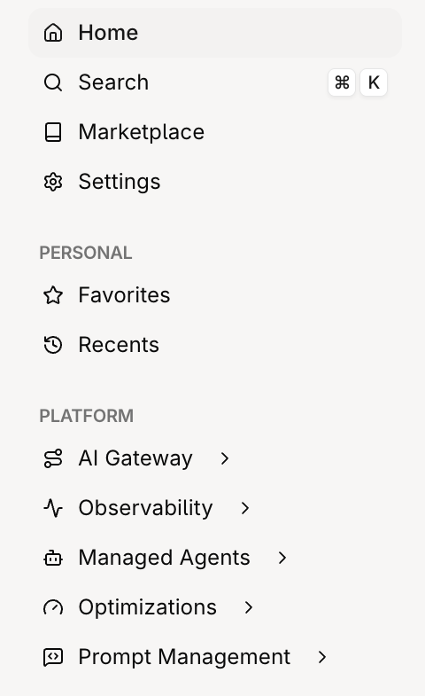
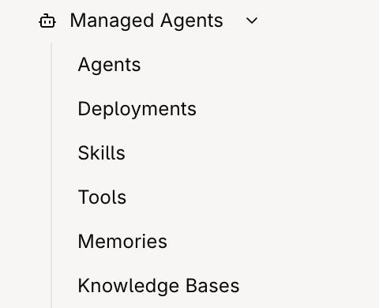
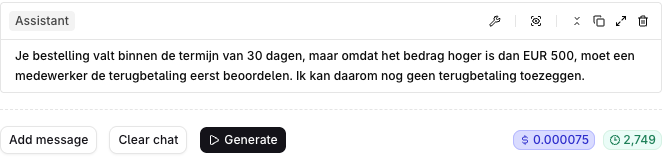

The Studio sidebar
Five folders. Closed on the left, opened on the right.





Tools: who runs them
Code tools run in orq.ai. Function tools run in your process. MCP tools run on a server you register.
 CODE TOOL · RUNS IN ORQ.AI
CODE TOOL · RUNS IN ORQ.AI
Python registered in orq.ai. One request runs the whole loop.
USE IT WHENThe logic can live in orq.ai.
 FUNCTION TOOL · RUNS IN YOUR PROCESS
FUNCTION TOOL · RUNS IN YOUR PROCESS
Your code runs it and sends the result back to the model.
USE IT WHENThe tool must reach your own database or private API, or needs your own approval step.
Register the server in orq.ai. Agents get its tools through the MCP Gateway.
USE IT WHENThe tools already exist as an MCP server, yours or a vendor's.
Playground: compare configurations
The same question on two models. Check prompts and settings before comparing answers.


Usage reporting: key concepts
The numbers behind the Studio views, and a cost alert on top.

- ReportingA
genai.usagequery groups requests, failed spans and cost by model or API key. - Error rateQuery
genai.error_rateseparately; grouped error counts are failed spans, not rejected HTTP calls. - Cost alertThe project cost alert evaluates on its configured interval; an attached notifier sends the trigger.
- Check intervalAlert intervals include 5 minutes, 15 minutes, hourly and daily, depending on configuration.
- LagReporting can lag. Check again later for a trigger after a spend spike.
Traces and threads: key concepts
Search by thread or identity, then open a trace to read each step.

- TraceA gateway call starts or joins a trace; your app can group a full turn under one root with
traceparent. - SpanOne step inside a trace: a model call, or a tool call your app marks.
- Cost and tokensThe traces list shows duration, tokens and cost for each request.
- Request fieldsSend identity and thread with the request; attach app name as metadata. They become trace filters.
- Guardrail blockThe root span turns red, with a shield icon and
orq.guardrail.action=block.
Knowledge bases: key concepts
Five settings decide what a search returns.

- ChunkingSplits each file into passages. Strategy, size and overlap decide what search can find.
- Embedding modelEmbeds chunks and search queries. If you change models, confirm stored chunks are re-embedded.
- Search typeVector matches meaning, keyword matches exact words, hybrid runs both. This seeded workshop base uses hybrid.
- RerankingReranking needs an enabled model; check the result for a rerank score.
- Attach to an agentAn agent searches only if it also has the knowledge search tools.
Managed agents: the API
Function tools return a call for your app to execute, then continue the Responses turn.
FUNCTION TOOL LOOP
HOSTED CODE TOOL
Return function_call_output with the matching call_id; continue with previous_response_id.